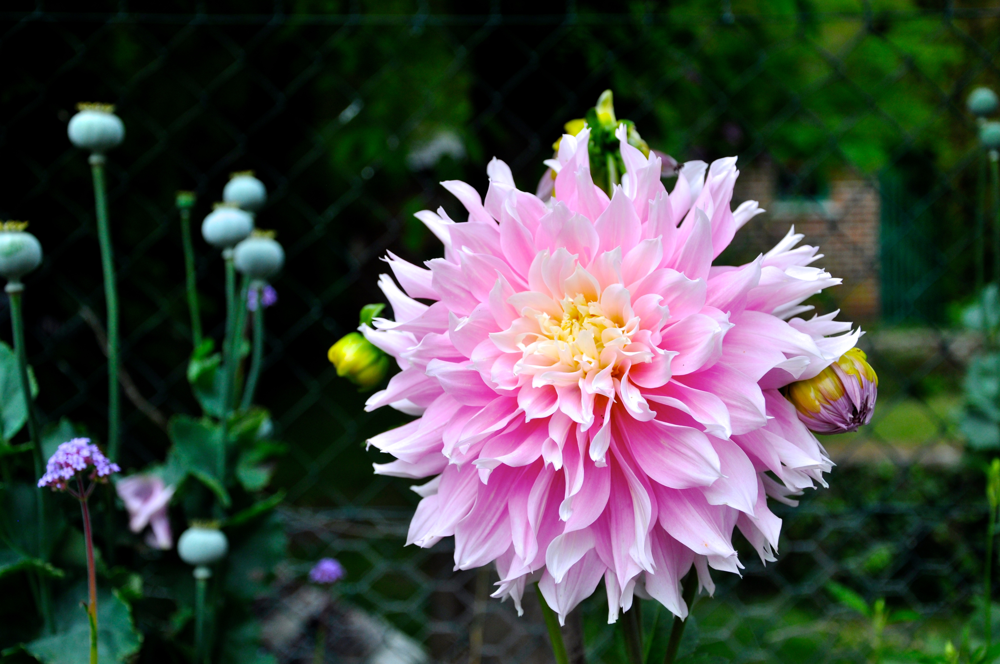

<!DOCTYPE html>
<html>
<head>
	<link rel="stylesheet" type="text/css" href="../css/style-6.css" />
	<title>20211011</title>
</head>
</html>
<body>
<div id=content>
	<div id="blog-container">
		<div class= "info">
			<div id="header">
			<h1>How to Be Happy</h1>
			</div>

			<div id=text-blocks>

				<div class="block" id="block-1">

					<p>I’m a happy person. I’m not unusually peppy or energetic (I’d make a terrible cheerleader), and I have days where I’m sad, disappointed, angry, frustrated, etc. Overall, though, I’m very satisfied with the life I’ve created with the opportunities I’ve been lucky to have. Many good things—like many bad things—happen by chance. However, there are some things that we have control over, and by keeping them in mind, we can make intentional, persistent, and targeted efforts to increase our overall happiness. </p><br> 

				</div>

				<div class="block" id="block-2">

					<u1 type="disc">
						<li style="padding-left:20px"> <a href="../blog_entries/blog_think_happy.html"><u>Make an Effort to Think Happy Thoughts</u></a> </li>
						<li style="padding-left:20px"> <a href="../blog_entries/blog_happy_mems.html"><u>Surround Yourself With Happy Memories</u></a> </li>
						<li style="padding-left:20px"> <a href="../blog_entries/blog_community.html"><u>Join a Community</u></a> </li>
						<li style="padding-left:20px"> <a href="../blog_entries/blog_exercise.html"><u>Exercise and Increase Your Adrenaline Intake</u></a> </li>
						<li style="padding-left:20px"> <a href="../blog_entries/blog_create.html"><u>Create Something</u></a> </li>
					</u1>

				</div>

			</div>	

			<div class="content-img-wrapper">
				
				<p class="caption">A flower in Monet's Giverny Garden</p>

			</div>

			<div class="home">

				<p> <a href="../blog.html"><u>Back to the Blog</u></a> <br> </p>

			</div>
	</div>
</div>
</div>
</body>

 


